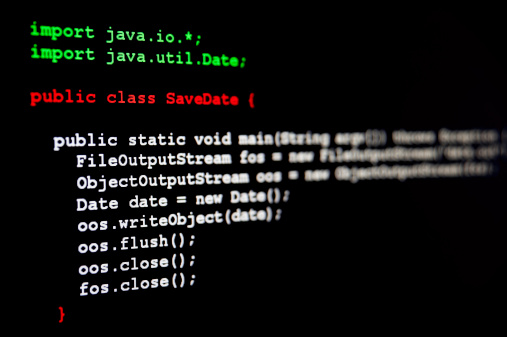

My Java Programming Projects
I started programming in Java my freshman year of college in an introductory object-oriented programming course and I have been sharpening my skills ever since. I have taken two java courses so far in college and plan to further develop my knowledge in this language as I evolve as a programmer. Over the year and a half of java programming I have under my belt I programmed many java projects. One of the programs that I am most proud of is certainly the playlist program allows the user to add, delete, and "play" songs/playlists, as well as add multiple users with their own unique playlists that can be copied from user to user. Another program I am very proud of is the taco truck restuarant program that stores data on ingredient inventory, meal orders, and sales. It was also capable of performing simulated ordering. These two programs were my largest and most complex programs. You can see the java code for all of these programs by downloading this zip file.
My Python Programming Projects
I began my python programming my sophomore year of college in a class called Data Structures and Algorithms. This course is more so about learning how different built-in functions can be used to create unique and functionally specific data structures. Some of the data structures that I have learnt about and implemented in python include doubley linked lists, array-backed lists, stacks, and queues. Because of the structure of the course, my programming focus and experience with python has been based on data structure implementation, but that is not to say that I haven't also been able to develop these data structures to be useful and demonstrate their merit. To see the .ipynb files I have created for my python projects click on this link to dowload the zip file.
My Assembly Language Programming Projects
Starting sophomore year I started learning about assembly language programming. I learned about how computers take the data from higher level languages such as Python and Javascript and translate it into assembly language before translating it again into machine language--ones and zeros. I have provided a zip file containing my 7 best programs in assembly language. These programs show the basics of the language and how I utilize the concepts I have learnt in my computer organization course to write simple, functional programs that accomplish the same tasks as programs that one would typically find in higher level languages. To check out my assembly language programming projects, you can dowload this zip file.
COM-IoT Technologies Business Plan Design
In 11th and 12th grade I interned at COM-IoT Technologies and built a strong connection with the company. During those years I also took a Higher Level International Baccalaureatte course called Information Technology in a Global Society. For the final project in this course, I interned with COM-IoT Technologies to design a business plan for them, using many of the Information Technology complex skills I learned in the course. To create this business plan, I had multiple interviews with the company's CEO about where the company is and where it wants to go--what challenges it faces, and how it plans to overcome said challenges. A lot of raw data was given to me and I had to transform it into a unique and interesting presentation. Editing photos, videos, and creating unique and uniform functional concepts and visual features were a large part of making sure the business plan looked professional and well thought out. Click on this link to check out the final powerpoint product.
Some Of My College Writing
Writing has always been one of my passions. In many of my classes in college I have written essays that I am very proud of and I believe reflect my literary and professional writing skills. During the second semester of my freshman year I took a public policy course in which I wrote a lot of essays about different political areas such as energy policy, government structure, government spending, and public response. I take a lot of pride in my writing and the essays I wrote in this class are no exception. I believe that my writing provides a great insight into my professionalism and ability to articulate my thoughts and beliefs. To check out my writing, you can view the pdf files of my essays by dowloading this zip file